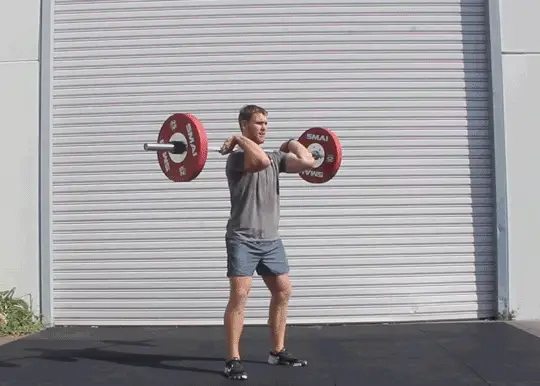

To Gain Weight
-
Caloric Surplus:
To gain weight, you need to consume more calories than your body burns. This means creating a caloric surplus. Aim for a moderate surplus to ensure that you're gaining muscle rather than just body fat. Calculate your daily energy needs using online calculators or consult with a dietitian to determine a target caloric intake. Gradually increase your daily calorie intake by 300-500 calories to create a moderate caloric surplus.

-
Nutrient-Dense Foods:
Choose foods that are rich in nutrients, such as lean proteins, whole grains, healthy fats, fruits, and vegetables. Include sources of lean protein like chicken, turkey, fish, eggs, dairy, beans, and tofu. Include a variety of nutrient-dense foods in your meals. Opt for whole, unprocessed foods to ensure you're getting a broad spectrum of vitamins and minerals. Prioritize complex carbohydrates like whole grains, sweet potatoes, and oats.

-
Frequent Meals and Snacks:
Eat more frequently throughout the day. Aim for three main meals and 2-3 snacks. Include healthy snacks like nuts, seeds, yogurt, cheese, and fruit between meals. Plan for 3 main meals and 2-3 snacks throughout the day. Snack on calorie-dense foods such as trail mix, Greek yogurt with honey and nuts, or nut butter with whole grain crackers.

-
Protein Intake:
Protein is crucial for muscle growth. Include protein-rich foods in each meal and snack. Consider protein sources like lean meats, dairy, eggs, legumes, and protein-rich snacks or shakes. Aim for 1.6 to 2.2 grams of protein per kilogram of body weight per day. Include protein-rich foods in each meal, such as lean meats, dairy, eggs, and plant-based proteins like beans and tofu.

-
Strength Training:
Engage in regular strength training exercises. This helps stimulate muscle growth and ensures that the weight you gain is muscle mass, not just fat. Focus on compound exercises like squats, deadlifts, bench presses, and rows.Incorporate a mix of compound exercises and isolation exercises into your strength training routine. Gradually increase the weights to challenge your muscles and stimulate growth. Aim for 2-3 strength training sessions per week.
 -
Healthy Fats:
Incorporate healthy fats into your diet. Avocado, nuts, seeds, olive oil, and fatty fish are good sources of healthy fats. Add sources of healthy fats to your diet, such as avocados, nuts, seeds, and olive oil. Consider adding a handful of nuts or seeds to your meals or snacking on avocado slices.

-
Whole Grains:
Choose whole grains over refined grains. Brown rice, quinoa, oats, and whole wheat bread provide additional nutrients and calories. Choose whole grains like quinoa, brown rice, whole wheat bread, and whole grain pasta. These foods provide fiber and additional nutrients compared to their refined counterparts.

-
Dairy or Alternative Sources:
Whole milk, yogurt, and cheese can be calorie-dense and provide essential nutrients. If you're lactose intolerant or choose not to consume dairy, consider fortified plant-based alternatives. If you tolerate dairy, include whole milk, Greek yogurt, and cheese in your diet. For non-dairy options, choose fortified plant-based alternatives like almond milk, soy milk, or oat milk.

-
Stay Hydrated:
While water is essential, drinking water before meals can help you consume more calories during the meal. Hydration is important, but avoid drinking excessive water right before meals, as it may fill you up. Drink fluids in between meals to ensure you stay well-hydrated.

-
Monitor Progress:
Keep track of your weight gain progress and adjust your diet and exercise routine accordingly.
Keep a food diary to track your daily intake and assess your progress.
Adjust your calorie intake based on changes in weight and muscle mass.